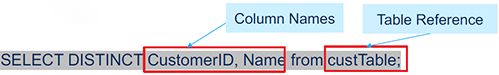
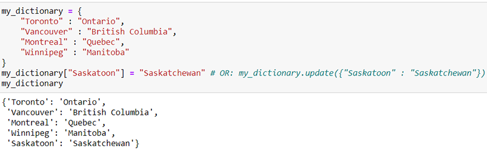
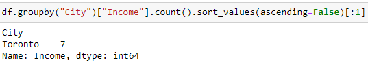
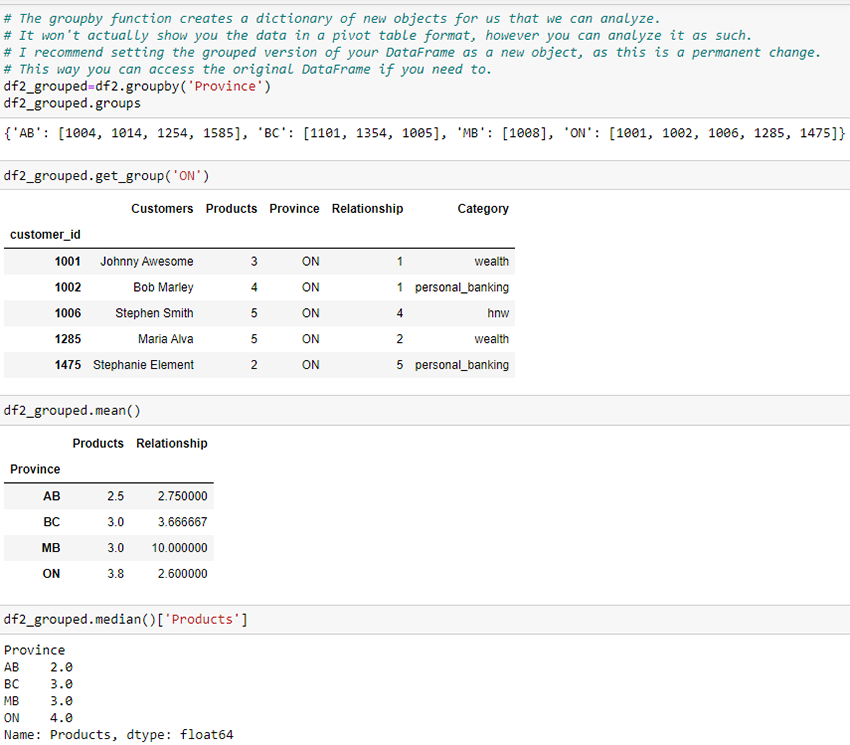
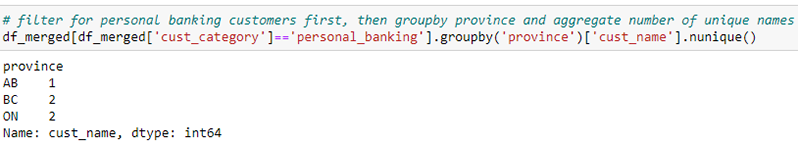

Using Python I: Organize and Analyze Data
University of Toronto School of Continuing Studies
Statistics is the process of deriving an understanding from data.
Descriptive statistics summarizes information about a dataset to provide basic insights:
- Measures of central tendency (mean, median, mode)
- Measures of dispersion (variance, standard deviation, range)
- Measures of relationship (correlation)
Inferential statistics uses data from a sample to determine the characteristics of a population where one can make a statement about the population with a well-defined level of confidence.
A sample is a group of data points which represent a broader population. We use samples to gather statistics which helps us estimate the parameters of a population. Generally, the greater the sample size, the more closely the statistics represent the population.
Sampling techniques:
- Simple random sample selects a fixed number of members of a population where each member has an equal probability of being selected.
- Stratified sampling divides a population into distinct groups, then samples the groups randomly.
- Cluster sampling groups the population in clusters based on characteristics easy to sample, such as location or time.
- Convenience sampling draws a sample based on those members of the population which are easiest to access.
| Data Type | Definition | Example |
|---|---|---|
| Categorical | Data where numeric values represent category membership. | Types of apples:
|
| Ordinal | Data which captures a meaningful sequence, but the difference between values does not have a numerical interpretation. | Level of difficulty:
|
| Interval | Data which captures meaningful sequence and the distance between values in a scale is meaningful, such that numeric operations can be performed. | Celsius scale:
|
| Ratio | Data which has an absolute 0. Also considered continuous, it allows for most meaningful analysis. |
|
| Cross-sectional | Data where no meaningful time dimension is associated with the observations (e.g., because all data is collected at the same point in time, or because time is irrelevant). |
|
| Time series | Data which has a meaningful time pattern associated with the observations. |
|
Measures of central tendency:
-
The mean (or average) represents a central, or typical value for the dataset. To calculate the mean, add all observations for a single variable and divide by the number of observations.
Example 1: Consider the following set of observations and calculate the mean.
19, 18, 10, 9, 7, 12, 13, 19, 20
(19+18+10+9+7+12+13+19+20)/9=14.1 -
The median finds the middle value of a set of observations, when ordered from lowest to highest. It separates the higher half of data from the lower half.
Example 2: Consider the following set of observations and identify the median.
19, 18, 10, 9, 7, 12, 13, 19, 20
7, 9, 10, 12, 13, 18, 19, 19, 20Example 3: Mean = $94.13, median = $76.24.
Since the mean and median are not aligned, we can assume that we have a non-normal distribution of data. -
The mode measures the number most frequently occurring in the data set. This is the number most likely to be sampled from your distribution.
Example 4: Consider the following set of observations and identify the mode.
19, 18, 10, 9, 7, 12, 13, 19, 20
7, 9, 10, 12, 13, 18, 19, 19, 20
Measures of dispersion:
-
Variance measures how far a set of numbers are spread from their mean. It is represented by the symbol ùúé2 for population variance and ùë†2 for sample variance. To calculate variance, sum the squared distance between each point and the mean of the dataset, and divide by the number of observations.
Example 5: Consider the following set of observations in a sample and identify the variance.
19, 18, 10, 9, 7, 12, 13, 19, 20
(19-14.1)2+(18-14.1)2+(10-14.1)2+(9-14.1)2+(7-14.1)2+(12-14.1)2+(13-14.1)2+(19-14.1)2+(20-14.1)2/(9-1)=24.61 -
Standard deviation is the square root of the variance. It is often expressed as ùúé for population variance and ùë† for sample variance. It is similar in nature to variance, but is expressed in relation to the mean rather than a squared value.
Example 6: From our previous example, we can calculate the standard deviation by taking the square root of 24.61.
Example 7: Mean = $94.13, variance = $5,596.74, standard deviation = $74.81.
Based on this, we can conclude that most transactions will be between (94.13-74.81)=$19.32 and (94.13+74.18)=$168.31 which is a fairly large range of spending patterns. This could be an indicator that we should segregate the data further before trying to draw conclusions about customer patterns as a whole. - Ranges, maximums and minimums are numerical ways to understand how the data is dispersed. To calculate range, subtract the minimum value of the data set from the maximum value.
- Quartiles are a more complex way to evaluate dispersion of data, by reviewing how many data points fall between the 1st, 2nd, 3rd and 4th quartile in a data set.
Measures of relationship:
-
Correlation refers to the extent that two variables have a linear relationship. For example, if a child grows taller, they also grow heavier.
The correlation coefficient, denoted by p helps us determine the strength of the relationship. It always lies between -1 and 1 (-1 = perfect negative relationship, 0 = no relationship, 1 = perfect positive relationship).
Assessing relationships using scatterplots:
Example 8: There is a strong positive relationship between the number of items purchased and the transaction total amount. Correlation coefficient = 0.98.
Analytics can help organizations learn more about their business, their clients, and the environment in which they operate.
Artificial intelligence is a broad term which encompasses all machine-based learning and insights.
The analytics methodology is a problem-solving approach to guide your thinking in deriving insights from data in a business setting.
Organizations use analytics to better understand and address current or foreseeable business problems.
A relational database stores and provides access to data points that are related to one another. Data is stored in tables where rows are unique records and have a unique ID called a key. The columns hold attributes of the data.
Statisticians or data scientists often refer to Columns as Variables and Rows as Observations.

One-on-one relationships are defined between two tables where both are associated with each other based on only one matching row; created using primary key - unique foreign key constraints:
- Primary key: column or set of columns that uniquely identify a row in a table.
- Foreign key: a column or set of columns in a second table whose value is required to match the value of the primary key in the original table.
One-to-many relationships are defined between two tables where a row from one table can have multiple matching rows in another table; created using primary key - foreign key relationship:
Structured Query Language (SQL) is a standard language for accessing and manipulating databases. It is used to update/create/delete databases, execute queries, and manage data access permissions.
SQL can be broken down into 3 sub-languages:
- A language for querying (immutable operations)
- A language for specifying a schema (declarations)
- A language for making changes (mutable operations)
SQLiteStudio:
- Database → Add a database → File (create a location where your database will be saved); Name (create a name for your database).
- Once your database is created, right click on your database and click "Import" (e.g., PracticeDB) → Name the table (e.g., CustomerData) → Import your files as tables (Data source type: CSV; Input file; Text encoding: UTF-8; ✓ First line represents CSV column names; Field separator: , (comma)).
- To run SQL queries in SQLite Studio, open SQL editor.
Basic SQL Syntax:
-
SELECT
Use this command to view certain columns from a table:
To select multiple columns, delineate the column names using a comma:
Always end your statements with a semi-colon.
-
DISTINCT
Use this command to view unique records (if duplicate records may exist):
 -
WHERE
Use this command to set conditions when querying data:
You can also create multiple conditions by using AND, OR, BETWEEN, LIKE, and IN operators.
-
INSERT
Use this command to insert additional data rows into your table:
Remember to include single quotes around text data.
-
ORDER BY
The ORDER BY function allows you to order a column in ascending or descending order; this can be combined with certain conditions:
-
GROUP BY
The GROUP BY function allows you to organize data in categories:
-
JOIN
The JOIN function is used to combine columns from multiple tables into a new table. There are 2 common types of JOINs: INNER and OUTER. INNER JOIN function will align records exactly (i.e., no null values). OUTER JOIN will take any unused rows and fill them with null values:
-
UNION
The UNION function is used to combine the output of two or more SELECT statements without showing duplicates:
UNION combines unique outputs. To include duplicate rows, use UNION ALL.
-
SQL comments:
Example 1. Retrieving data.
- Write a SQL statement to display all transaction data.
SELECT * FROM TransactionData; - Write a SQL statement to display only the transaction ID column.
SELECT TransactionID FROM TransactionData; - Write a query to display the columns from the transaction table data in a certain order: transaction ID, transaction city and customer ID.
SELECT TransactionID, TransactionCity, CustomerID FROM TransactionData; - Write a query to select the first 5 rows of the transaction data table.
SELECT * FROM TransactionData LIMIT 5; - Write a query to select the first 5 transaction amounts, multiplied by 10.
SELECT (TransactionAmount × 10) FROM TransactionData LIMIT 5; - Write a query to select the transaction IDs which contain the first 3 digits 658.
SELECT TransactionID FROM TransactionData WHERE TransactionID LIKE "658%";
Example 2. Boolean and relational operators.
- Write a query to display all transactions over $50.
SELECT * FROM TransactionData WHERE TransactionAmount > 50; - Write a query to display all transactions over $50 in the city of Toronto.
SELECT * FROM TransactionData WHERE TransactionAmount > 50 AND TransactionCity = "Toronto"; - Write a query to display all transactions which are over $50 and in the city of Toronto or Montreal.
SELECT * FROM TransactionData WHERE TransactionAmount > 50 AND TransactionCity = "Toronto" OR TransactionCity = "Montreal"; - Write a query to display all transactions which are over $50 and NOT in the city of Toronto or Montreal.
SELECT * FROM TransactionData WHERE TransactionAmount > 50 AND TransactionCity != "Toronto" AND TransactionCity != "Montreal"; - Write a query to display all transactions between $50 and $150 in the city of London.
SELECT * FROM TransactionData WHERE TransactionAmount BETWEEN 50 AND 150 AND TransactionCity = "London";
Example 3. Aggregators.
- Write a query to sum all transaction amounts.
SELECT SUM(TransactionAmount) FROM TransactionData; - Write a query to count the number of distinct transaction cities.
SELECT COUNT(DISTINCT TransactionCity) FROM TransactionData; - Write a query to select the maximum and minimum transaction amounts, and display them in columns titled MAX and MIN.
SELECT MAX(TransactionAmount) as MAX, MIN(TransactionAmount) as MIN FROM TransactionData; - Write a query to calculate the average transaction amount per city.
SELECT AVG(TransactionAmount) as AVG, TransactionCity FROM TransactionData GROUP BY TransactionCity; - Write a query to calculate the maximum transaction amount per city, and order from largest to smallest.
SELECT MAX(TransactionAmount) as MAX, TransactionCity FROM TransactionData GROUP BY TransactionCity ORDER BY MAX DESC;
Example 4. Assignment 1 (selected examples).
- Use the JOIN function to combine all 3 tables.
SELECT * FROM CustomerData JOIN TransactionData ON CustomerData.CustomerID = TransactionData.CustomerID JOIN BranchData ON CustomerData.HomeBranch = BranchData.BranchNumber; - Identify the highest spend categories for customers in Toronto.
SELECT SUM(TransactionAmount) as SUM, TransactionType, TransactionCity FROM TransactionData WHERE TransactionCity="Toronto" GROUP BY TransactionType ORDER BY SUM DESC;
SELECT SUM(TransactionAmount) as SUM, TransactionType, TransactionCity FROM TransactionData WHERE TransactionCity="Toronto" GROUP BY TransactionType ORDER BY SUM DESC LIMIT 1; - Write a query to identify any transactions under $300 in the city of Montreal.
SELECT TransactionAmount, TransactionCity FROM TransactionData WHERE TransactionCity="Montreal" AND TransactionAmount < 300; - Write a query to identify customers whose name contains the letter "m".
SELECT Name FROM CustomerData WHERE Name LIKE "%m%"; - Write a query to calculate the range of transaction amounts (max - min).
SELECT MAX(TransactionAmount) - MIN(TransactionAmount) as RANGE FROM TransactionData; - Write a query to calculate how many customers transact in a city other than their home (i.e., the city of their HomeBranch is different than the TransactionCity).
SELECT COUNT(DISTINCT(CustomerData.CustomerID)) FROM CustomerData JOIN TransactionData ON CustomerData.CustomerID = TransactionData.CustomerID JOIN BranchData ON CustomerData.HomeBranch = BranchData.BranchNumber WHERE Location != TransactionCity;
Functional programming:
Object oriented programming combines related data and functions into a unit, referred to as an "object".
Anaconda Navigator:
Jupyter Notebook → Create or select a folder where you want to save your project (e.g., Documents) → In the folder you selected, create and rename a new folder (e.g., Test) → To create a new notebook (.ipynb): New → Python 3 → Rename your notebook → "Python 3", "Trusted" → To run a code that in a cell: "Run" or "SHIFT + ENTER" → In[num]/Out[num]: num - you can see what the last piece of code that you ran → To add comments: "Markdown" (# Title, ## Subtitle, your comment) or "Code" (# your comment).
Built-in Python functions:
- print() displays the output of code (remember to always add quotes (' or ") around strings): print("My name is Alina!")
- type() checks the data type: type("My name is Alina!")
- isinstance(a, int) checks the type of an instance; isinstance(a, (int, float, str)) checks if an instance is one of many types
- max() identifies the highest number in an iterable
- min() identifies the lowest number in an iterable
- round() rounds a float to the nearest integer
- sum() calculates the sum of two or more values
- abs() returns the absolute value of a number
- str() converts a value to a string
- map() applies a function to every number in an iterable
- range() creates a range of integers
- next() retrieves the next item from an iterable
- slice() split an iterable into sections
Binary functions:
- A + B add a and b
- A – B subtract a and b
- A * B multiply a and b
- A / B divide a by b
- A // B divide a by b, and drop remainder
- A ** B raise a to the power of b
- A & B "True" if both a and b are true; for integers, use AND
- A | B "True" if either a or b are true; for integers, use OR
- A ^ B "True" if a or b is True, not both; for integers, use XOR (exclusive OR)
- A == B "True" if a equals b
- A != B "True" if a is not equal to b
- A <= B, A < B "True" if a is less than or equal, less than b
- A >= B, A > B "True" if a is greater than or equal, greater than b
- A is B "True" if a and b reference the same object
- A is not B "True" if a and be reference different objects
Mutable objects (or values they contain) can be modified: lists, dictionaries, NumPy arrays, user-defined classes.
Immutable objects (or values they contain) cannot be modified: strings, tuples.
Immutable objects are fundamentally expensive to "change", because doing so involves creating a copy. Changing mutable objects is cheap. Immutable are quicker to access than mutable objects.
You can create your own data sets within Python, with the following properties (created data sets can be used for simulations/practice):

a_tuple = 1, 2, 3, 4 (find values in specific locations within tuples using square brackets []: a_tuple[0])
a_list = [1, 2, 3, 4] (find values in specific locations within lists using square brackets []: a_list[0], a_list[1:3]; add elements using append(): a_list.append("car"); remove elements using pop() (the value in brackets points to the position of the item to be dropped): a_list.pop(2))
Jupyter will automatically create indentation after a colon. If indentation is manual, recommended is 4 spaces vs. tab.
If, elif and else:
For loops:
While loops:
Functions should be defined whenever a code is intended to be re-used:
Anonymous functions, also called "lambda" functions, used for single-use, quick or short functions:
Numerical Python (NumPy) consists of multidimensional array objects and has a collection of functions to process arrays.
Numerical arrays are much more efficient in storage and manipulation in data science (i.e., once we get our data to a format that is appropriate for a problem, we will need to convert that data frame into a NumPy array).
Anytime we want to use NumPy (https://numpy.org/doc/stable/reference/) in an analytics project, we need to import it into the document using the following notation:
Generally, functions in Python and Python-compatible libraries follow the same structure:
We can create 1-D and 2-D arrays with NumPy:
Example 1: Create 3 separate lists. Create a NumPy array from the 3 lists.

Return a sample (or samples) from the "standard normal" distribution - np.random.randn(# rows, # columns) (e.g., np.random.randn(2, 3)):
Random values in a given shape - np.random.rand() (e.g., np.random.rand(2, 3)):
Example 2: Create an array with 4 columns and 9 rows. Print the array. Use NumPy's shape() function to understand the parameters of the array.
Python stores all data in objects, such as lists, dictionaries, arrays or tuples. Objects have varying memory requirements and some are more efficient than others, which enables faster processing and lower memory use.
When an object is created in Python, there are additional pieces of information Python uses in the background to define it. Let's take an integer for example. In addition to the value of the integer, Python would also store the following in the background:
- ob_refcnt, a reference count that helps Python handle memory allocation and deallocation
- ob_type, which encodes the type of the variable
- ob_size, which specifies the size of the following data members
- ob_digit, which contains the actual integer value that we expect the Python variable to represent
When you define a variable, for example x = 1, this is actually a pointer to an object, or position in memory, which holds the information about the variable, including the bytes that contain the actual variable.
When we store data in a list, each variable is stored in its own object which contains the above four parameters. The list becomes a collection of pointers to objects. This is what allows for flexibility in storing different types of data in the same list. However, if the data types are the same, this creates redundancy in the pointers and processing.
Arrays are typically homogeneous in nature – they store the same data type. This means that Python does not have to create a separate object for each variable and can directly store data variables in the array object. This is more efficient than other storage mechanisms because when an object is called, the program does not need to reference multiple pointers. Arrays are used in machine learning models, and datasets which contain multiple data types (e.g., categorical and numerical) are converted to numerical data.
Python allows you to build fixed-type arrays using a function called array, which comes from Python's built-in module Array. However, Python only defines a particular set of data types – for example, it only uses one integer type, one float type, one string type, etc. This is fine for most functions, but for more complex problems, more flexibility is required.
NumPy has 24 additional Python types to describe different types of scalars. Scalars are types of data which build upon what is available in Python in a hierarchical way.
NumPy arrays are also referred to as an ndarray which stands for n-dimensional array. This means that you can create homogeneous arrays that are as wide and long as you would like. Every item of data takes up the same sized block of memory and each block is interpreted in the same way. Data within an array can be accessed using slicing or indexing techniques. You may also create heterogeneous arrays, which consist of mixed data types, however you will not be able to perform operations on them. Pandas is a better resource for handling mixed data.
NumPy arrays have a fixed size at creation, unlike Python lists, which can grow dynamically. Changing the size of an ndarray will create a new array and delete the original. This is because an array is stored within one object across several bytes of memory, and other data can be stored in the subsequent bytes.
While Python's built in array package offers efficient storage for data, Numpy also allows you to perform efficient operations. For example, you can apply a mathematical operation to an entire array, or subsets of an array very quickly. If you were using a list, Python would need to iterate over each object within the list which would require additional memory for overhead – such as checking the data types of each object.
Example 3: Write a function which takes each even number in the list and multiplies it by 3.
Example 4: Create a dictionary of any elements you want, and write a function to print just the keys of the dictionary.
Example 5: Define a function to find the median value in a given list.
Example 6: Define a string object which states the following: "Twinkle, twinkle, little star, How I wonder what you are! Up above the world so high, Like a diamond in the sky.". Count the number of times the letters "e", "a" and "t" appear. Then, write a function to split separately each word of the string.
Example 7: Write a function to add an entry to the dictionary: "Saskatoon: Saskatchewan".
Example 8: For the dictionary in the previous question, define a function to check if a value is in the dictionary.
Example 9: Assignment 2 (selected examples).
Your task is to write a code which will count the number of times each of the symbols "A", "C", "G", and "T" occur in s. Your code should generate a list of 4 integers and print it out.You are given a dictionary of the US states and their capitals. The keys in the dictionary are states and the values are capital names. Write a code to return a list of all capitals that contain the name of a state in their name as a substring.Write a function isIn() which returns boolean True if a point is within a rectangle specified by two sets of coordinates and boolean False if the point is outside the rectangle. The function should accept three parameters: the first parameter is a set of coordinates which defines one of the corners of the rectangle, the second parameter is also a set of coordinates that defines the second corner, the third set of coordinates defines a single point which is being tested. If the point being tested is on the side of the rectangle, consider it to be within the rectangle. We assume that the edges of the rectangle are parallel to coordinate axes. We also assume that the first parameter does not always represent the left corner of the rectangle and the second parameter is not always the right corner. The function should work correctly either way.Modify your function from the previous question so it takes a list of points rather than a single point and returns boolean True only if all points in the list are in the rectangle. Use the same assumptions as above about the placement of the points and how rectangle is defined. Make sure that your function returns False for empty list of points (no values).
Pandas is a library designed for working with tabular or heterogeneous data (vs. numpy's homogeneous numerical data arrays).
You need to import the pandas library in order to organize your data in a Series object or a DataFrame object. A Series object is simply a column of data, a DataFrame object is a collection of columns of data. Both of them are categorized by an index. If you do not set a specific column as an index of a data frame, Python will assign one for you (0, 1, 2, 3...). The index does not need to be a set of unique values, it can be a set of repetitive values as well. It just allows you to filter through observations that have some specific characteristics that are captured in the index.
Series are one-dimensional array-like object containing a sequence of values and an associated array of data labels.
You can adjust values of corresponding index items:
Data frames are two-dimensional, table-like data structures used by statistical languages like Python and R. Data frames used for organizing heterogeneous data in a logical manner; easy data preparation / clean-up; data processing, such as ability to group variables and conduct mathematical operations.
To import data from a SQL database, import the following packages:
To import data from an Excel or CSV file, use the following functions:
Basic data analysis with pandas:
- Filter a data frame down to the rows and columns of interest
- Clean its values with arithmetic and string operations
- Summarize groups of rows
- Compute new columns based on existing columns
- Join a data frame with others, for further analysis
- Plot one column vs. another
- Mathematically model one column as a function of another (e.g., with linear regression)
Matplotlib is a 2D plotting library used to visualize data.
Common terminologies:
-
Plot is an illustration that can be represented using a graph, plt.plot():
-
Figure is a diagram or a shape that can be formed by a collection of plots in different dimensions, plt.figure():
-
Label is used to add labels or names to respective x and y axes, plt.label(). Title is used to display the title of the graph, plt.title():
-
Subplot a subplot() function can be called to plot multiple plots in the same figure, plt.subplot():
Line plotting can be used to represent frequency of data over a time period.
Bar plotting can be used to compare totals by time period or grouping.
Area plotting can be used to compare time period data.
Pie plots are used to represent proportions.
Scatter plots are used to observe trends.
Histogram plot frequency plot, organized by "bins" or "buckets".
Example 1: What is the average income in this data set?
Example 2: What is the average income by city in this dataset?
Example 3: Which city has the most observations?
Example 4: What is the average income and monthly expenses by marital status?
Example 5: Which people are most likely to have a high income, based on gender, occupation, city, and marital status?
Example 6: What conclusions can you make about Toronto women's income?
Example 7: Calculate the correlation between income and expenses.
Example 8: Data analysis using pandas (part 1).
Example 9: Data analysis using pandas (part 2).Write a function to display a Series object with only the names of Wealth customers.Write a function to identify all PersonalBanking customers with more than 3 products.What is the average spend of customers in Alberta?How many personal banking customers are there in each province?Who are the top 3 customers with the highest spend?Which customer has the highest single transaction?What is the average spend by Province and Customer Category?What is the average spend by transaction type?Which transaction type is the most popular in each province?
Example 9: Assignment 3 (selected examples).
Write a function to identify how many men vs. women were on board, and how many survived in each group.Write a function to identify how many men vs. women were traveling with families of 3 or more members, and how many were traveling alone or in pairs.Write a function to identify how many passengers departed from each of the 3 ports. Write a function to identify how many passengers were in each class.Define a function to classify each person in an age group with the following groupings: 0-10, 11-20, 21-30, 31-40, 41-50, 51-60, 60+. Add a new column in the DataFrame which identifies each person's age group. Then, count the number of survivalists in each age group.Survival rate of adults with or without family.
Write a function to identify how many passengers were in each class.Define a function to classify each person in an age group with the following groupings: 0-10, 11-20, 21-30, 31-40, 41-50, 51-60, 60+. Add a new column in the DataFrame which identifies each person's age group. Then, count the number of survivalists in each age group.Survival rate of adults with or without family.
Storytelling is about delivering the right messages to your audience about your analytics project.
Storytelling pyramid:
Situation, complication, resolution:
Narrative flow:

Visualizations:
-
Comparison (line charts, bar charts, radar charts): These charts allow you to compare two or more variables and the differences between them.
-
Distribution (histograms (single variable), scatterplots (two variables), heat maps (two variables)): These graphs are used to show how data is spread out or grouped.
-
Composition (bar charts, waterfall charts, pie charts): These visualizations are used to show the makeup of a data set, or various components (e.g. sales by region).
-
Relationship (scatterplots, bubble charts): These charts aim to identify correlations, trends, patterns and clusters.
Visualization best practices:
- Clearly label your charts
- Stick to one idea per slide
- Start with summary graphics, move towards more complicated insights
- Avoid chart junk (e.g., unnecessary icons, graphics)
- Make sure the end user understands the underlying data before showing analysis
Dashboards are dynamic reports containing key pieces of information that a user requires to make decisions. The basic dashboard flow is:
- Most substantial information at the top (i.e., key metrics)
- Supporting information in the middle
- Details at the bottom
Key metrics:
- YTD revenue
- Customer attrition / retention measures
- Cost per unit
- Units complete
- Error rate
- Customer satisfaction scores
Supporting information should provide more detail about key metrics:
- Demographics
- Location
- Time
- Shift
The details section is flexible and can include anything relevant to support running the business.
Common dashboard tools: Tableau, Power BI, and Alteryx.
Example 1: Matplotlib and seaborn.